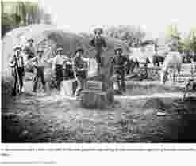

U.S. History · Gilded Age / Progressive Era · Day 8
Who Had Power? Wealth, ReformA change intended to improve a system. and Change
How did Americans respond to the new wealth and unequal power of industrial America—and what questions remain today?
Start / Resume Assignment
Use your anonymous alias from your other assignments (two letters and two digits minimum). Do not enter your real name or school ID.
Enter an alias to check for saved work.
Alias: Completion grade: 0%Local: saved on this deviceCloud: not yet verifiedReady
Cloud verification is shown only after the server confirms the exact saved snapshot. If cloud is unavailable, this device keeps a local copy. Submit a PDF to Google Classroom.
Thinking Is Fun! · MOVE
Is extreme wealth fair?
The illustration could not be loaded. Use the written scenario below.Illustration for classroom discussion. Hypothetical founder and workers—not identifiable real people.
MOVE activity: Imagine a founder builds a company employing 100,000 people and serving millions of customers. The founder becomes worth $100 billion. Many workers earn reasonable salaries; some struggle to pay rent. The founder took risks, and employees chose to work there.
Choose your gut reaction first. Then move to the YES, NO, or IT DEPENDS area of the room. Explain your first impression to someone nearby; then return to your seat.
Reveal competing arguments — open after everyone returns to their seats
Arguments defending great wealth
Large rewards may motivateGive a reason or desire to act. people to create new ideas and take business risks.
Customers choose what to buy, and workers choose whether to accept jobs.
Businesses create jobs and may raise living standards.
Founders and investorsPeople or groups who put money into businesses hoping for a return. may deserve large rewards for their money, judgment and work.
Arguments questioning great wealth
Workers, customers and public investments also help create success.
Some workers have limited choices or bargaining powerAbility to negotiate better conditions, prices or pay..
Huge wealth differences can affect people's opportunitiesChances people have to achieve something..
Wealthy people may gain greater access to politicalRelated to government and public decisions. decision-makers.
One argument that challenges my view is ___ because ___.Although I first thought ___, the argument about ___ makes me reconsider ___.
I now think ___ because ___.My view [stayed the same/changed] because I weigh ___ more heavily than ___.
Then & now
Wealth inequality: Why should anyone care?
WealthThe value of everything a household owns, minus debt; also called net worth. is different from incomeMoney received over a period of time, such as pay or investment earnings.. InequalityA situation in which people or groups have different amounts of money, opportunity or power. describes how unequally resources are shared. Some people see large fortunes as a reward for innovation; others worry about economicRelated to money, jobs, trade and production. security and politicalRelated to government and public decisions.influenceThe power to affect a decision or event..
Business fortunes, then and now
Historical values are approximate equivalents based on a person's share of the U.S. economy, not simple inflation. Modern figures are market-based estimates from November 2026. Because methods differ, treat the comparisons as illustrations, not exact rankings.
Illustrative valuations, not cash holdings. Modern figures · Historical comparison. Images are illustrative portraits from Wikimedia Commons; if an external image is unavailable, the name and data remain visible.
Who held America's wealth? 1916 and 2026
Each chart divides households into five equal-sized groups called quintilesFive equal groups, each containing 20% of households, ranked here by household net worth.. The top 1% is carved out of the richest 20%, so you can see how much of the pie is held by a very small group.
Important: best estimates, not exact quintile data. Researchers have historical estimates of the top 1% share in 1916, and the Federal Reserve publishes modern wealth shares for different-sized groups. Neither source supplies all five quintiles for the exact years shown. The smaller slices below are best-effort illustrative estimates, not published measurements. Use them to see the scale of inequality, not to claim that each quintile figure is precise.
1916 · United States
Best-estimate quintile reconstruction
Top 1%38.12%of U.S. wealth
Bottom 20%0.5%
Second 20%1.0%
Middle 20%3.5%
Fourth 20%9.0%
Next 19% (top fifth)47.9%
Top 1% (top fifth)38.12%
The richest quintile includes the next 19% and top 1%, shown separately in the same pie. Top 20% estimate: 86.0%.
The richest quintile includes the next 19% and top 1%, shown separately in the same pie. Top 20% estimate: 81.0%.
Source:Federal Reserve Distributional Financial Accounts. The top 1%, next 9%, next 40%, and bottom 50% are published groups. Quintile subdivisions are approximations consistent with those totals.
Comparison caution: The 1916 top 1% estimate and 2026 Federal Reserve estimate use different sources and methods. They are not perfectly comparable. The large concentration of wealth at the top is the central pattern, not the exact difference between the two percentages.
So what? Being unequal is not automatically the same as being poor. Some inequalities occur while people's living standards rise. Yet the distribution of wealth can matter for housing, opportunity, savings, and the ability to influenceThe power to affect a decision or event. political decisions.
Evaluate the arguments
Reasons someone might say inequality is acceptable
Rewards encourage entrepreneurship and investment.
Some great fortunes come from creating products that many people choose to use.
Everyone could become better off even if the richest gain more.
Individuals have different goals, preferences and risks.
Reasons someone might say inequality is a problem
Wealth can strongly affect opportunitiesChances people have to achieve something. for children and families.
People with fewer assets may have less protection against emergencies.
Large fortunes can create unequal access to politicians and public influence.
Workers, public services and customers all contributeTo give something that helps produce a result. to business success.
I think wealth inequality [should/should not] be addressed because ___.Although the argument about ___ matters, I give more weight to ___ because the evidenceInformation that helps support or question a claim. shows ___.
Primary-source comparison · 2012
Who makes a successful business possible?
During the 2012 presidential campaign, Barack Obama and Mitt Romney debated how businesses succeed and what role the public plays. Obama's remarks were widely shortened into a controversial sound bite. Read the surrounding argument rather than interpreting a single phrase by itself.
Select words in either passage, then choose:
Barack Obama
President · Roanoke, Virginia · July 13, 2012
Context: Obama was arguing that individual achievement and public investment work together. The passage below is a contextual summary, not a word-for-word transcript, with brief original phrases identified separately.
Short original phrases: “you didn't get there on your own”; “individual initiative”; “we do things together.”
Republican presidential candidate · Costa Mesa, California · July 23, 2012
Context: Romney criticized Obama's remarks at a roundtable with business leaders. This contextual summary captures his argument about founders' hard work and government policies, not a verbatim transcript.
Short original phrases: “how hard it is to start a business”; campaign slogan: “We did build it!”
Source-reading reminder: The longer readable passages are identified as summaries so they cannot be mistaken for exact quotations. To read the primary sources verbatim, follow each source link.
The contributions behind success
capitalMoney and resources used to start or expand a business., courts, public research, education, and infrastructureBasic systems such as roads, electricity, water and communication networks.">
Both speakers recognize ___, but they differ about ___.While one emphasizes ___, the other stresses ___; the graphic adds ___.
Historical bridge · 1890s
Farmers challengeTo question or oppose an existing idea or situation.concentratedGathered in the hands of a small number of people or groups. power
Farm workers operating a hay press on Irvine Ranch, California, late 1880s. Homestead Museum historical photo and context. A local lower-resolution copy of the teacher's original hay-crew photograph is also available below.Show teacher-supplied hay crew photograph (circa 1890)

Original source credited Underwood Archives/Getty Images.
Many farmers struggled with debt, fluctuatingChanging up and down. crop prices and railroad freight rates. Farmer-led organizations and the Populist PartyA political movement that argued ordinary people, especially farmers, should have more influence over the economy and government. called for changes including stronger railroad oversightThe act of watching, checking, or supervising an activity. and a graduatedIncreasing in steps as the amount being measured rises. income tax. Workers and farmers had different jobs but often worried about powerful organizations influencing prices and decisions.
Discuss: What did farmers and industrial workers have in common? Which powerful institutions did each challengeTo question or oppose an existing idea or situation.?
Click each reform. Notice the problem → the responseAn answer or reaction to a problem. → how well it worked. You do not need to memorize every law. Some laws existed before the main Progressive Era; others passed later. Several had limited effects at first.
I chose ___ and ___ because they gave more influence to ___ over ___.These reforms shifted decision-making from ___ toward ___; however, ___ still had power because ___.
Culminating investigation
Who had power in 1870 and 1910?
For each group, read both three-sentence contexts and rate its overall ability to influence major decisions from 1 (very little) to 10 (very great). These are your evidence-based interpretations, not a test with a single correct number. Political and economicRelated to money, jobs, trade and production. power may differ. A rating is only recorded after you move the slider.
I think ___ gained the most because in 1870 ___ but by 1910 ___.Although ___ still faced limits, the shift from ___ to ___ suggests ___.
The group I chose is ___ because the contexts show ___.Despite ___, this group's ability to influence decisions was restricted by ___.
Unit conclusion
What changed—and what didn't?
The Gilded Age created remarkable new wealth and technology, but also conflicts over who benefited, who paid the costs and who controlled decisions. Reformers challenged some arrangements; other inequalities continued.
IndustrializationThe growth of factories, machines, and large-scale production. changed America by ___. People responded by ___, which ___.Although ___ addressed ___, the evidence from ___ and ___ suggests reforms were [effectiveSuccessful in achieving a goal./limited/mixed] because ___.
Before you leave: Check your completion percentage, press Save now, and export your assignment PDF. If the PDF library is unavailable, use Emergency PDF.
Finish, save and submit
Completion grade: 0%Local: saved on this deviceCloud: not yet verified
A local copy is kept on this device; cloud status changes only after the exact saved version is verified. Download your assignment before leaving.


.jpg?width=240)

.jpg?width=240)


 capital
capital